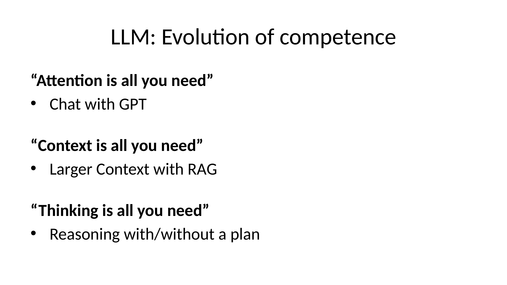
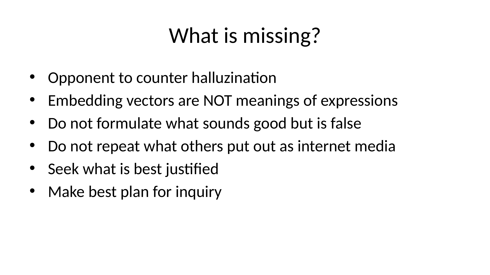
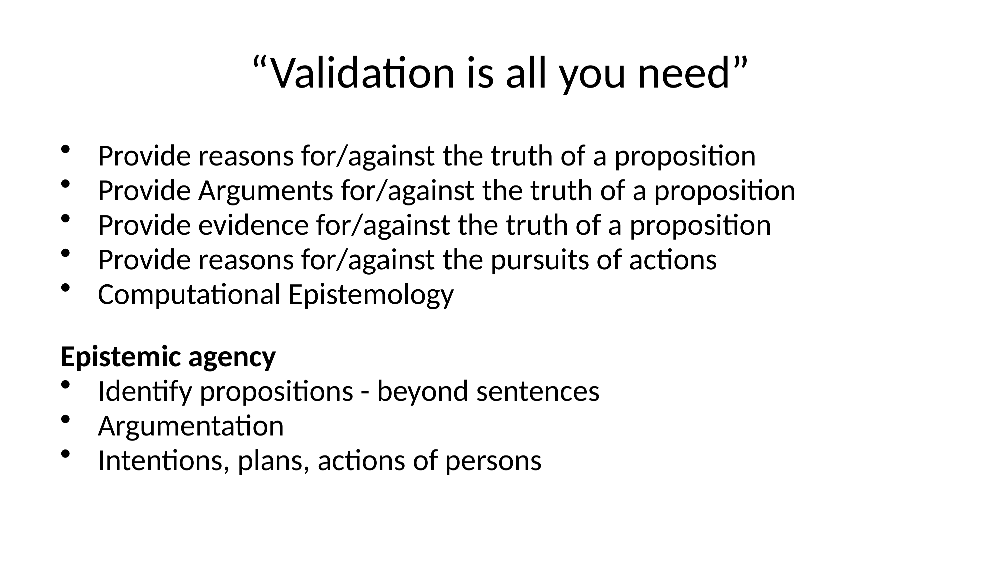
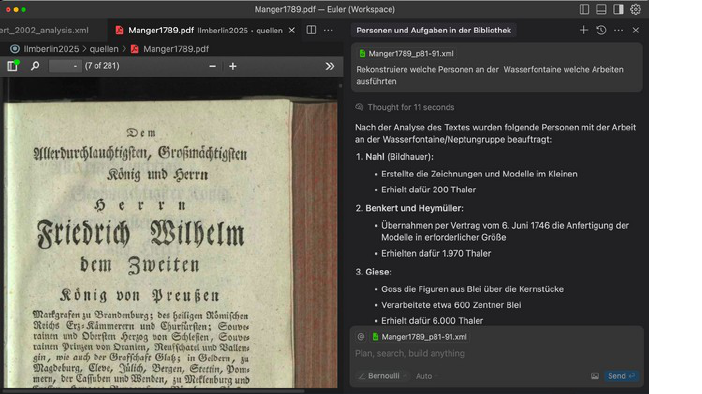
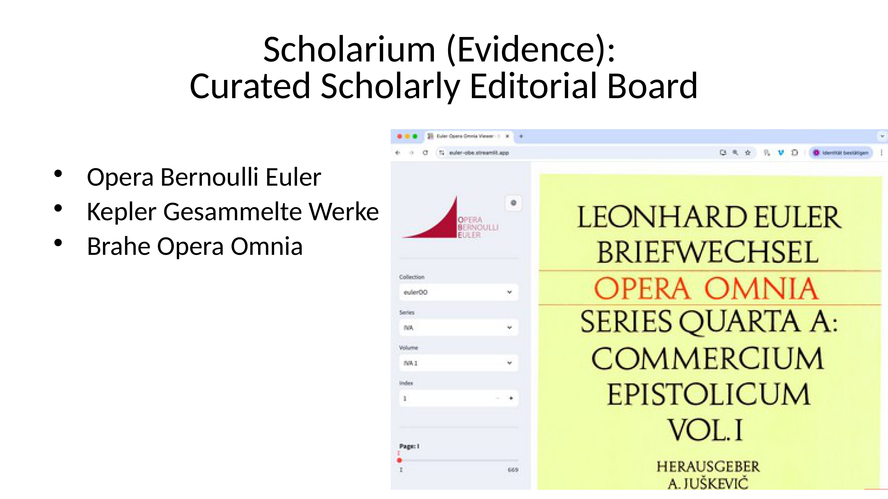
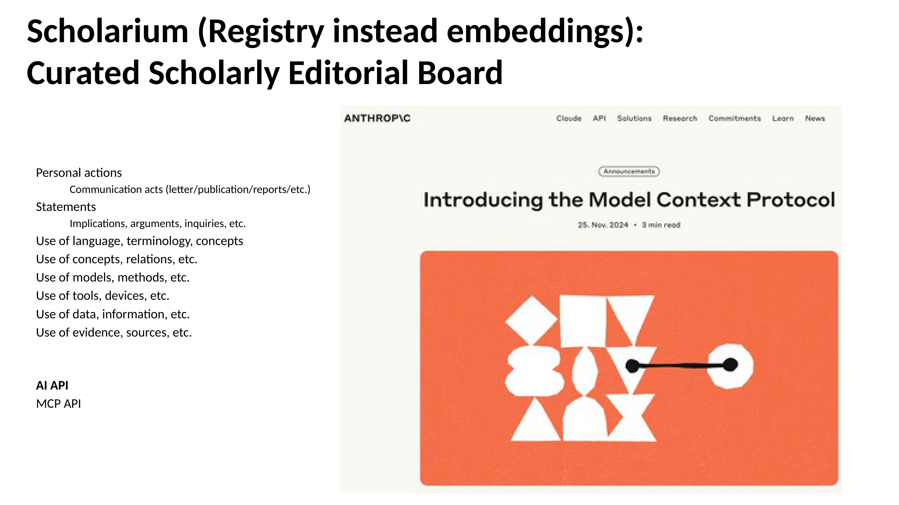
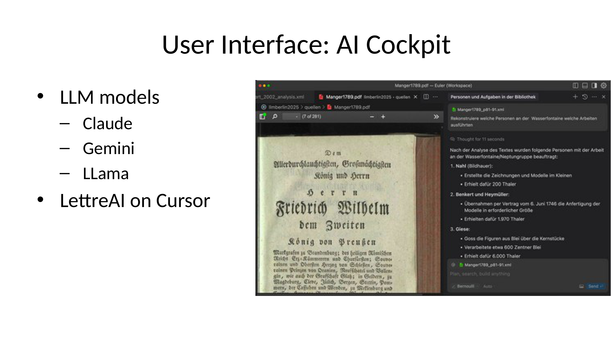
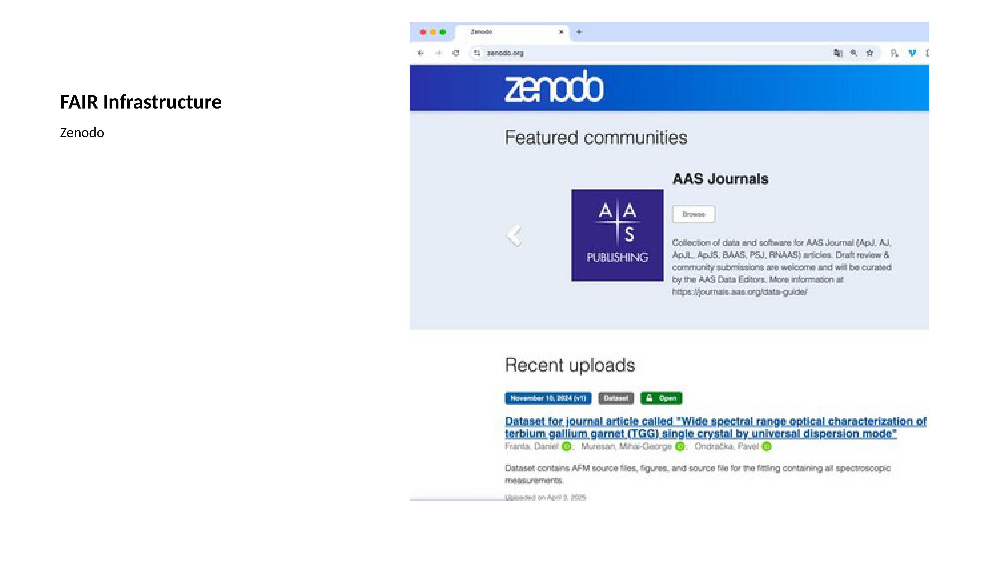
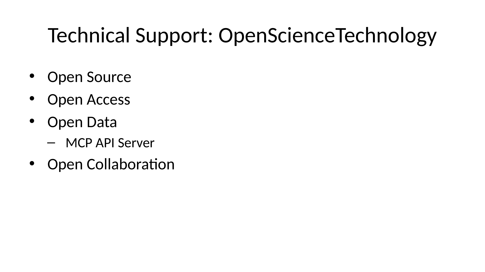

Modeling Science
Overview
The chapter, “Modelling Science,” critically examines the role of computational tools, particularly Large Language Models (LLMs), in scientific inquiry and scholarly content generation. It begins by tracing the conceptual evolution of LLM capabilities, acknowledging their significant advancements. However, it immediately pivots to a rigorous analysis of their persistent and fundamental limitations. The authors highlight the pervasive issue of hallucination and the inherent lack of epistemic agency in current LLM outputs, which poses significant challenges to their reliable application in academic and scientific domains. This initial discussion establishes the imperative for a paradigm shift: moving from uncritical reliance on LLM generation to a more robust, validated approach.
A central argument of this chapter is the assertion that “Validation is all you need.” This principle posits that any proposition or action, especially within scholarly contexts, demands rigorous support and verification. This underpins the subsequent introduction of practical solutions designed to address the identified LLM deficiencies. The discussion then emphasises the foundational role of meticulously curated sources, illustrating this through a demonstration of software for digital text analysis. This sets the stage for the unveiling of Scholarium, a novel, registry-based platform conceived as a comprehensive, curated scholarly database. Distinct from conventional embedding-centric systems, Scholarium champions a structured approach to managing and validating scholarly content, thereby facilitating multimodal AI inquiry by prioritising data integrity and verifiable provenance.
To operationalise this vision, the chapter introduces the AI Cockpit as the primary user interface. This interface is designed to seamlessly integrate LLM capabilities within a framework of robust data stewardship and advanced document analysis, emphasising the controlled application of AI within a validated environment. Furthermore, the discussion extends to the foundational infrastructure supporting this ecosystem, highlighting platforms like Zenodo as exemplars of FAIR (Findable, Accessible, Interoperable, Reusable) data principles. These principles are crucial for developing community-driven and AI-ready scholarly resources. The chapter concludes by outlining the guiding philosophy of OpenScienceTechnology, which emphasises principles of sustainability, openness, and technical support. Collectively, these components articulate a compelling vision for a new era of digital scholarship that leverages AI’s potential whilst rigorously upholding scientific integrity and epistemic responsibility.
8.1 LLM Competence: Conceptual Evolution and Persistent Challenges

Slide 2, titled “LLM: Evolution of competence,” outlines a conceptual progression in the development of Large Language Models (LLMs). This evolution begins with the foundational concept of “Attention is all you need” [Vaswani et al., 2017], which marked a significant leap in sequence processing and epitomises early conversational models like Chat with GPT. The progression then moves to “Context is all you need,” recognising the importance of incorporating broader external information. This is often achieved through Retrieval-Augmented Generation (RAG) [Lewis et al., 2020], which provides a larger and more relevant context for LLM responses. The aspirational third stage, “Thinking is all you need,” points towards models capable of genuine reasoning, whether through pre-defined plans or more emergent cognitive processes.
However, despite this depicted evolution, a critical examination reveals significant unmet needs and fundamental limitations within current LLM technologies. A core challenge lies in countering hallucinations, as current models often prioritise fluency and coherence over factual accuracy. This issue stems from a deeper conceptual misunderstanding: embedding vectors, whilst powerful for representing semantic similarity, are not synonymous with the “meanings of impressions [or] expressions” in a true cognitive sense. The authors contend that LLMs should not formulate responses that merely “sound good but are false,” nor uncritically repeat “what others put out on media, internet media,” as such outputs do not constitute genuine knowledge or justified answers.
Crucially, existing models fundamentally lack the capacity for higher-order cognitive functions such as seeking “what is best justified” or the ability to “make plans for scientific inquiry.” These capabilities, essential for true intelligence and academic rigour, are entirely missing from current LLM architectures. The presenter emphatically concludes that “no model can do that,” indicating a profound gap that current technological paradigms offer “no hope” of achieving. This suggests that the “evolution of competence” depicted on the slide is, in many critical aspects, far from complete.
8.2 Addressing LLM Limitations: The Imperative of Validation and Epistemic Agency

Slide 3, titled “What is missing?”, critically examines fundamental limitations and necessary improvements for Large Language Models (LLMs). A primary concern is the pervasive issue of hallucination; the authors propose introducing an ‘Opponent to counter hallucination’ to ensure factual accuracy and reliability. Furthermore, the slide highlights a crucial conceptual misunderstanding, asserting that ‘Embedding vectors are NOT meanings of expressions’. This underscores the need for a deeper, more nuanced understanding of linguistic and semantic representation beyond mere statistical associations. These points collectively articulate the pressing need for LLMs to move beyond superficial linguistic generation towards grounded, verifiable knowledge.
Building upon these identified gaps, the slide prescribes vital ethical and epistemological directives for LLM development. These include strict adherence to truthfulness—“Do not formulate what sounds good but is false”—and a caution against uncritical dissemination: “Do not repeat what others put out as internet media.” Instead, the authors contend that LLMs must adhere to principles that guide them to “Seek what is best justified” and to “Make best plan for inquiry,” emphasising a commitment to reasoned thought and rigorous investigation. The presenter powerfully frames the overarching solution to these challenges as “validation,” positing it as the essential element for providing reasons, arguments, and evidence for or against the truth of a proposition, and critically, for or against the pursuit of actions.
To bridge this validation gap and foster genuine epistemic capabilities in LLMs, the presenter proposes a new discipline: computational epistemology. This emerging field aims to develop the methods and methodologies required to imbue AI with what the authors term “epistemic agency.” This crucial capability extends beyond mere sentence generation. It enables LLMs to identify propositions within complex texts, discern arguments in diverse sources (including historical inquiries), and interpret the intentions, plans, and actions of individuals documented within historical records. Ultimately, the authors aim to equip LLMs with the capacity for critical assessment and justified reasoning, moving them towards a more robust and ethically sound form of artificial intelligence.
8.3 The Imperative of Validation and Epistemic Agency in Computational Inquiry

The foundational premise of this discussion asserts that “Validation is all you need,” emphasising that any proposition or course of action necessitates robust support. Validation, in this context, extends beyond mere assertion; it demands comprehensive reasons, compelling arguments, and concrete evidence both for and against the truth of a statement, as well as for or against the pursuit of specific actions. This rigorous approach is intrinsically linked to the field of Computational Epistemology, which seeks to formalise and automate the processes of knowledge acquisition, justification, and reasoning. Central to this framework, the authors define Epistemic Agency as the capacity to identify propositions—moving beyond mere linguistic sentences to grasp underlying claims—engage in sophisticated argumentation, and comprehend the intentions, plans, and actions of individuals.
The authors apply this theoretical framework practically within a computational working environment designed to tackle complex inquiries. This is illustrated by a historical case study concerning the 18th-century construction of Sanssouci castle. A long-standing historical dispute revolves around the precise involvement of the renowned mathematician Leonhard Euler in this project and whether his contribution, or that of others, led to one of the biggest construction failures of the era. To address such open questions, the system provides an “inquiry window” where users can formulate precise questions, such as “Reconstruct which persons performed which work on the water fountain.” The objective is not merely to retrieve information, but to obtain a “validated answer”—a qualified, reliable response supported by proven evidence, free from hearsay.
To assist in these inquiries, the system employs an AI agent, presumptively named Bernoulli, which embodies the principles of epistemic agency. This agent navigates and processes vast quantities of historical sources, moving far beyond the limitations of simply reading a single PDF or relying on basic indexing and token matching. The true challenge lies in aggregating and intelligently synthesising information from all available sources to construct a coherent, evidence-based narrative. This computational approach aims to provide the depth of validation and analytical rigour demanded by the slide’s core premise, transforming intricate historical debates into computationally tractable and verifiable inquiries.
8.4 The Foundational Role of Curated Sources in Digital Text Analysis

Slide 5 visually presents a live demonstration of a sophisticated software application designed by the authors for digital humanities research. The interface on the left pane displays a historical document, specifically a text titled ‘Allerdurchlauchtigsten, Großmächtigsten König und Herrn Friedrich Wilhelm dem Zweiten König von Preußen’, indicating a focus on historical and archival materials. Complementing this, the right pane, labelled ‘Personen und Aufgaben in der Bibliothek’, showcases the platform’s capability for structured information extraction. It highlights entities such as ‘Nahl (Bildhauer)’, ‘Benkert und Heymüller’, and ‘Giese’, along with associated monetary values and actions. This demonstrates the software’s utility in uncovering specific details and relationships within complex historical narratives.
Crucial to the efficacy of such advanced digital analysis, as the presenter elaborates, is the underlying quality of the source material. The authors emphasise the involvement of a “scholarly curated editorial board which has worked on the sources” as a key component for successful scholarly work in this domain. This highlights that whilst digital tools provide powerful analytical capabilities, their output is only as reliable as the input data, necessitating meticulous human scholarship in preparing and verifying historical texts.
The Opera Omnia of Euler exemplifies the immense scale and dedication required for such foundational work. This monumental project, comprising 86 volumes, involved approximately 120 years of sustained effort by numerous scholars. It culminated in the complete editing of all Euler’s letters and 866 publications just two years prior. This rigorous, long-term scholarly endeavour in text preparation is fundamental, providing the high-fidelity, meticulously edited digital sources that enable the precise and insightful text analysis capabilities demonstrated by the application.
8.5 Scholarium: A Novel Platform for Curated, Validated Scholarly Content

The sixth slide introduces Scholarium, a pioneering platform designed by the authors as a comprehensive, curated scholarly database, distinct from conventional data embeddings. As highlighted by the presenter, this innovative system provides a structured, validated source for historical information, moving beyond typical data representation methods. The slide visually reinforces this by showcasing examples of meticulously curated scholarly works such as the Opera Bernoulli Euler, Kepler Gesammelte Werke, and Brahe Opera Omnia, underscoring the platform’s commitment to complete and authoritative historical records.
Scholarium’s core strength lies in its ability to compile highly detailed, chronologically organised inventories of historically proven activities. The presenter elaborated on the depth of this curation, which encompasses chronologies of actions, expressions communicated between individuals, the evolving use of terminology and language by a person, and even the historical application of tools and material objects. This granular level of detail ensures a rich, contextually grounded understanding of historical figures and their contributions, all rigorously validated by primary sources and forming a very detailed inventory of historical records.
The visual component of the slide, featuring a screenshot of a digital library interface displaying ‘LEONHARD EULER BRIEFWECHSEL OPERA OMNIA SERIES QUARTA A: COMMERCIUM EPISTOLICUM VOL. I,’ exemplifies the practical application of Scholarium’s curated content. This screenshot perfectly illustrates how the platform provides direct access to meticulously organised and historically verified records, such as extensive correspondences, which are fundamental to academic research and understanding the intellectual lineage of historical thought.
8.6 Scholarium: A Registry-Based Framework for Structured Scholarly Content and Multimodal AI Inquiry

The authors introduce Scholarium as a novel framework centred on a registry-based approach for managing and curating scholarly content, explicitly positioning itself as an alternative to embedding-centric systems. This structured methodology supports a “Curated Scholarly Editorial Board,” implying a robust system for organising and validating academic contributions. The framework meticulously categorises various dimensions of scholarly work, including personal actions like communication acts (e.g., publications, reports), and the nuanced nature of statements (e.g., implications, arguments, inquiries). Furthermore, it captures the specific academic methodologies employed, detailing the use of language, terminology, concepts, relations, models, methods, tools, devices, data, information, evidence, and sources, thereby providing a granular and comprehensive record of scholarly endeavours.
To significantly enhance the utility of these precisely recorded elements, the authors integrate them with advanced artificial intelligence capabilities. The slide highlights the presence of both an AI API and a Model Context Protocol (MCP) API, as evidenced by the Anthropic webpage screenshot. This indicates a strategic design to enable programmatic interaction with sophisticated AI models, allowing for structured and context-aware inquiry into the amassed scholarly data. These “records,” once established, become readily queryable by accessible multimodal AI models.
Crucially, the presenter emphasises that such models, exemplified by the latest versions of Gemini 2.5, are particularly well-suited for the task due to their ability to seamlessly combine and process information from diverse modalities, including text and images. This multimodal capability is vital for effectively extracting insights and solving complex analytical requirements from the rich, categorised content stored within the Scholarium registry, thereby facilitating a deeper understanding and interaction with scholarly knowledge.
8.7 The AI Cockpit: User Interface, LLM Integration, and Data Stewardship

Slide 8 introduces the AI Cockpit, which serves as the primary user interface for the system. It facilitates advanced document analysis and information extraction. As depicted on the left side of the slide, this interface boasts robust integration with a variety of leading Large Language Models (LLMs), including Claude, Gemini, Llama, and the specialised LettreAI on Cursor. This multi-model support ensures flexibility and powerful analytical capabilities for diverse document types and analytical tasks. The accompanying screenshot on the right visually demonstrates the AI Cockpit’s operational view, displaying a historical document such as ‘Manger1789.pdf’ alongside its associated analysis pane. This showcases the system’s ability to perform structured information extraction directly within the intuitive interface.
The data generated through the AI Cockpit’s powerful extraction capabilities necessitates a robust and sustainable strategy for storage and dissemination. To address this, the project team commits to adhering to FAIR (Findable, Accessible, Interoperable, Reusable) data principles. The authors have selected Zenodo, a repository hosted by CERN in Geneva, as their long-term solution for storing and publishing research data. This choice is critical for ensuring the longevity and broad accessibility of the valuable structured information extracted by the system.
Zenodo’s infrastructure provides a reliable and persistent platform, enabling the hosting of these research data for many years. This thereby supports open science and facilitates future research and validation. This comprehensive approach, combining a sophisticated AI-powered user interface for data extraction with a dedicated, FAIR-compliant repository, establishes a complete pipeline for academic research data management, from initial processing to long-term preservation and publication.
8.8 Zenodo: Enabling FAIR Data Through Community and AI-Ready Infrastructure

Slide 9, titled ‘FAIR Infrastructure,’ provides a concrete illustration of these principles through the Zenodo platform, prominently featured with its subtitle. Zenodo serves as a vital open repository that enables researchers to share and discover various types of research outputs, including datasets, publications, and software. As depicted in the accompanying screenshot, Zenodo facilitates community engagement and content discoverability through features such as ‘Featured communities,’ exemplified by ‘AAS Journals,’ which outlines specific publishing and community submission processes. The platform also highlights ‘Recent uploads,’ showcasing how new research outputs, such as the specific dataset “Wide spectral range optical characterization of terbium gallium garnet (TGG) single crystal by universal dispersion mode” uploaded by Franka, Daniel et al., become immediately available and discoverable to the wider scientific community.
Beyond its user-facing functionalities, dedicated technical expertise underpins the robust operation of such an infrastructure. Entities like Open Science Technology, a startup instrumental in maintaining the platform’s technical stability and evolving capabilities, provide this critical support. A significant development in this regard is the implementation of a Model Context Protocol (MCP) API server. This server specifically standardises the access of artificial intelligence models to the vast trove of data hosted on the platform, thereby facilitating worldwide inquiries and automated knowledge extraction. This forward-looking approach directly addresses the growing need for machine-actionable data, significantly enhancing the interoperability and reusability aspects of FAIR principles.
Whilst acknowledging the dynamic landscape of technological advancements, this initiative represents a proactive attempt to standardise AI access APIs for global scientific knowledge. This commitment to standardisation, coupled with an ethos of open collaboration, ensures that the infrastructure remains adaptable and accessible, not only for human users but also for emerging AI-driven research paradigms. By continually developing such sophisticated access mechanisms, Zenodo reinforces its role as a pivotal component in the evolving ecosystem of open science and FAIR data.
8.9 OpenScienceTechnology: Pillars of Sustainable Digital Scholarship

Slide 10, “Technical Support: OpenScienceTechnology,” outlines the foundational principles governing the technical and operational philosophy of the presented scholarly support system. These principles—Open Source, Open Access, Open Data (supported by components like the Model Context Protocol (MCP) API Server), and Open Collaboration—are central to ensuring the longevity and utility of digital scholarly achievements. The speaker underscored the critical importance of a maintained infrastructure for scientific achievements, citing the 110-year legacy of the Euler edition as a testament to sustained scholarly work. This long-term perspective highlights the necessity of these open principles to prevent digital projects from “evaporating” once initial funding ceases, a prevalent issue in digital humanities.
A key aspect of this framework is the commitment to Open Access and Open Data, which directly addresses common pitfalls in digital scholarship. The speaker emphasised the proactive resolution of copyright issues, contrasting this with traditional publishing models that often impose exclusive rights, leading to project “dead ends.” This commitment ensures that valuable scholarly work remains accessible and usable for future research. Furthermore, the discussion on computational epistemology reinforced the need for ‘Open Data’ that is not merely available but also complete and structured. Whilst not inherently against unstructured texts, the system advocates for their use in a structured manner to facilitate precise and verifiable answers. This is particularly crucial for historical research where complete chronologies and negations demand robust, prepared data beyond the capabilities of current unstructured AI approaches like embeddings or RAG.
The principles of Open Source and Open Collaboration underpin the transferability and scalability of this approach across diverse scholarly domains. The speaker acknowledged the inherent friction between maintaining high quality and achieving broad scalability, suggesting that collaborative frameworks are essential to bridge this gap. The vision extends to developing computational epistemology where models can be explicitly instructed with rules for causal reasoning, propositional logic, and scientific experimental justification. This highlights how Open Collaboration in developing and applying such methodologies, coupled with careful data curation strategies for LLM applications, can enable more rigorous and reliable scholarly engagement with AI, ensuring that human expertise remains central whilst leveraging technological advancements. Ultimately, this comprehensive approach fosters a sustainable and ethically sound future for digital scholarship.